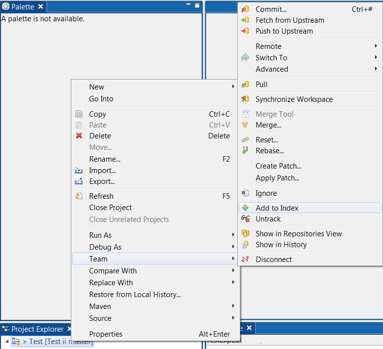
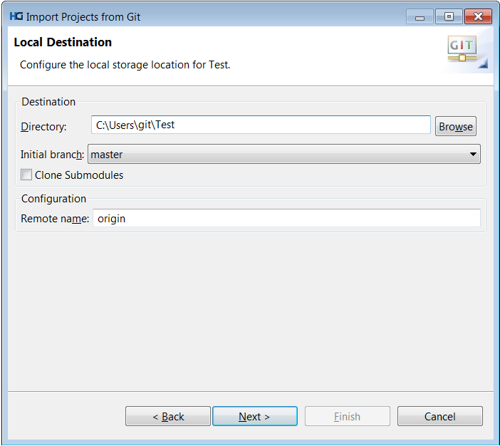
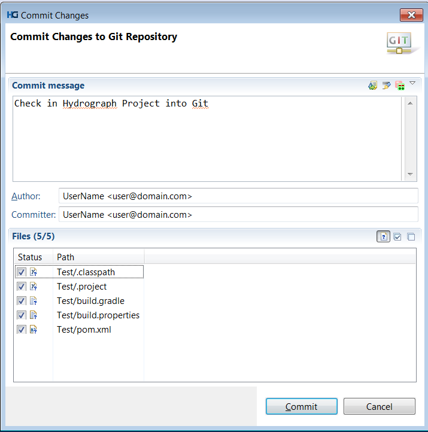
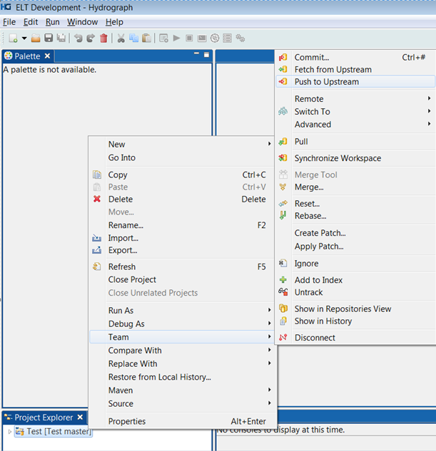
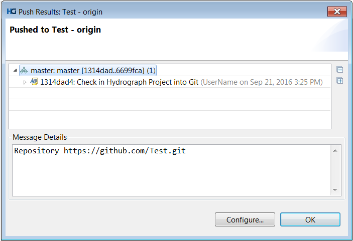

How to check out existing Hydrograph projects from Git Repository
1) Right click on project in project explorer > Team> Add to Index


2) Right click on project in project explorer > Team > Commit:
3) Enter commit message, select files to check in and click on Commit:

4) Right click on Project in Project Explorer > Team> Push to Upstream

It will show confirmation screen:
